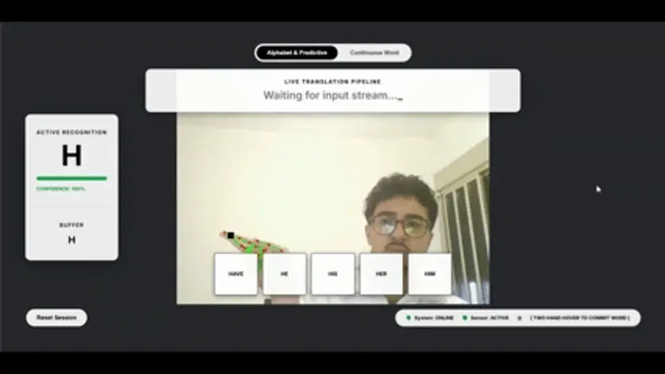
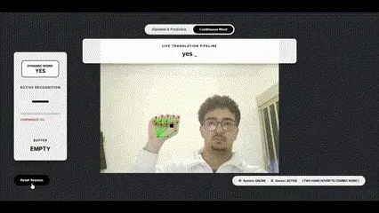

01Capture
Camera frames reach the FastAPI service over WebSockets.
Machine learning
Recognize hand gestures in a live camera stream
This application translates a supported set of ASL gestures into text, with separate modes for fingerspelling and dynamic words.


Architecture walkthrough
Camera frames reach the FastAPI service over WebSockets.
MediaPipe extracts the hand landmarks.
A static or sequence model predicts a supported gesture.
The interface uses multi-frame consistency before updating the text.
MediaPipe extracts 21 hand landmarks. Static recognition uses an ONNX classifier, while the dynamic mode classifies sequences with an LSTM. Multi-frame consistency helps stabilize output.